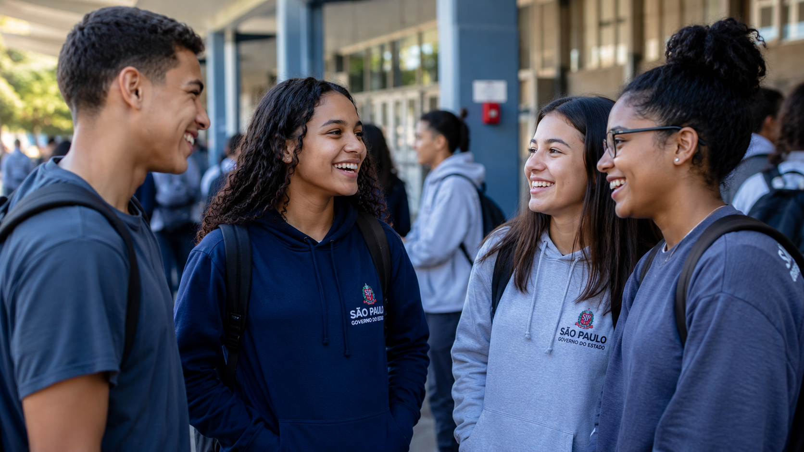

🎯
0
Estudantes na amostra
2º e 3º ano do Ensino Médio, ouvidos presencialmente nas cinco escolas.
Uma imersão presencial com estudantes do 2º e 3º ano do Ensino Médio para entender, na prática, o que funciona, o que trava e onde estão as maiores oportunidades da plataforma.

Fomos até as escolas para compreender as principais dores, frustrações, necessidades e expectativas dos estudantes que utilizam o PreparaSP e outras plataformas digitais como apoio na preparação para o vestibular e o ENEM. Este relatório reúne os principais insights coletados durante essa pesquisa de campo.
Uma pesquisa qualitativa de campo, conduzida com estudantes reais, em ambiente real, para capturar percepções espontâneas sobre o uso do PreparaSP.
Cinco unidades da rede estadual, com turmas de 2º e 3º ano do Ensino Médio.
Conversas abertas, em grupo, sobre a rotina de estudo e o uso da plataforma.
Cada conversa foi documentada integralmente para análise posterior, preservando a fala dos estudantes.
Organização e codificação dos trechos em insights, dores e oportunidades acionáveis.
As barras indicam com que recorrência cada tema apareceu nas conversas com os estudantes. É uma leitura qualitativa de quanto o assunto se repetiu, não uma medição estatística.
Os obstáculos que mais apareceram quando os estudantes falaram sobre usar, ou desistir de usar, o PreparaSP.
As oportunidades mais claras para tornar o PreparaSP mais útil, mais usado e mais querido pelos estudantes.
Trechos reais das conversas com os estudantes. Editados apenas para clareza, preservando o sentido da fala.
Fotografias das visitas às escolas e das conversas com os estudantes. As imagens serão adicionadas em seguida, e os espaços abaixo já estão preparados para recebê-las.
Movimentos concretos, ordenados por prioridade, para evoluir o PreparaSP a partir do que ouvimos em campo.
Este relatório nasce da voz dos estudantes. O próximo passo é transformar cada insight em melhorias reais na experiência do PreparaSP.